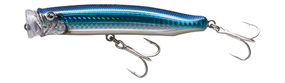
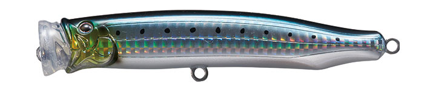
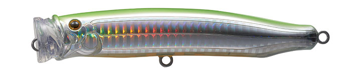
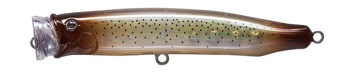
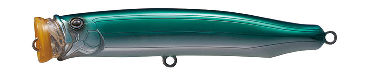
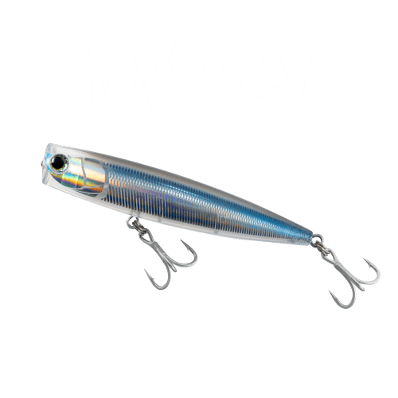

フィードポッパー121
（CONTACT FEED. POPPER 121）
フィードポッパー121（CONTACT FEED. POPPER 121）はTACKLE HOUSE（タックルハウス）のポッパーです。
シリーズのファーストモデル「フィードポッパー120」を、PEラインの使用を前提に2024年にリニューアルしたモデル。ナイロンライン全盛の頃の設計だった120に、ほかのフィードポッパー同様の扱いやすさを持たせました。音質にこだわったマウスカップとほぼ直立の浮き姿勢で、シーバスからショア青物まで水面に引き出せるのが最大の魅力です。

画像出典:タックルハウス公式HP
スペック
- メーカー
- TACKLE HOUSE（タックルハウス）
- タイプ
- ポッパー（フローティング）
- 型番
- CFP121
- 全長
- 121mm
- 自重
- 30g
- フック
- ST-56 #1
- リング
- #5
- カラー
- 全20色（NRカラー5色を含む）
- ターゲット
- シーバス・青物・ヒラスズキ・シイラ・カツオ
- 価格
- 2,700円（メーカー表記）
- 発売
- 2024年
▼今すぐチェック

フィードポッパー121の特徴
定番120をPEライン時代に合わせて作り直した、軽い操作でよく鳴るポッパー
-
PEラインの使用を前提にリニューアル
ベースになったフィードポッパー120は、ナイロンライン全盛の頃に設計されたモデル。121はPEラインで使うことを前提に見直され、ほかのフィードポッパーと同じような扱いやすさを手に入れた。今のPEタックルでそのまま使いやすい1本だ。
-
音質重視のマウスカップ
軽いジャークでもポップサウンドを奏でるよう、マウスカップは音質を重視した設計。力を入れてあおらなくても鳴るので、長時間投げ続けても疲れにくく、テンポよく水面を探っていける。
-
ほぼ直立の浮き姿勢と、高比重ボディの飛距離
水面ぎりぎりで、ほぼ直立に近い姿勢で浮くため、魚が吸い込みやすく、移動距離を抑えた集中ポッピングもしやすい。コンパクトで高比重のボディなので、ポッパーながら飛距離も十分だ。
フィードポッパー121の使い方
基本はポッピング。ロッドを軽く短くあおるだけでポップ音が出るので、強くあおりすぎないのがコツ。「ポコッ」と鳴らしたら少しステイを入れ、追ってきた魚に食わせの間を作る。
浮き姿勢が立っているため、移動距離を抑えて同じ場所で何度もポップさせる「集中ポッピング」がしやすいのも特徴。ストラクチャー際や明暗の境目にキャストし、その場で粘って誘う使い方がハマります。
フィードポッパー121の得意な状況
ベイトを水面に追い込んでいるシーバスや、朝夕マズメに回遊してくる青物を水面で狙う状況が最大の出番。
橋脚・係留船・岩などのピンスポットに魚が付いている時や、ミノーでは引いてしまうシャローで、その場に留めながら誘いたい場面で選びたい1本です。
ワンポイント
ナイロンラインで使い慣れた120を持っている人も、PEラインで使うなら121が扱いやすい選択肢です。今のPEタックルで120クラスのフィードポッパーを使うなら、まずは121から選ぶのがオススメです。
ポッパーは水面が割れてもすぐに合わせず、ロッドに重みが乗ってから巻き合わせると掛かりやすくなります。
フィードポッパーシリーズの使い分け
| モデル | 全長／自重 | 得意な場面 |
|---|---|---|
| CFP100 | 100mm／22g | 太軸フックのヘビーデューティー仕様・ベイトが小さい時の切り札 |
| CFP120 | 120mm／30g | シリーズのファーストモデル・ナイロンライン全盛の頃の設計 |
| CFP121 | 121mm／30g | 120をPEライン前提にリニューアルした2024年モデル（本記事のモデル） |
| CFP135 | 135mm／45g | シーバスタックルからツナタックルまで・ショアもオフショアも |
| CFP150 | 150mm／60g | ショアからの大型青物・オフショア |
| CFP175 | 175mm／74g | シリーズ最長・最重量・オフショアのナブラ打ち |
フィードポッパーは100〜175mmのサイズに、ライトゲーム向けの70mmを加えたシリーズ。121は原点の120をPEライン時代に合わせて作り直したモデルで、シーバスとショア青物の両方をカバーする中核サイズだ。
オススメカラー
フィードポッパー121は通常カラー15色＋NRカラー5色の全20色展開。シーバス・ショア青物でオススメのカラーを厳選して紹介します（カラー名は公式の表記のまま）。

No.7 イワシ・スリットHGイワシを食べている魚に合わせやすい定番ベイトカラー。まず1色ならここから。

No.2 チャートバック・オレンジベリー・スリットHGチャートの背中とオレンジのベリーで、水面でルアーの位置が分かりやすい。濁りや朝夕のローライト時に。

No.20 イカ透け感のあるブラウンにドットを散らしたイカ柄。イカを捕食している青物や、ナチュラルに見せたい時に。

No.24 マリンブルーHVCメタリックなブルーバックにオレンジのカップを合わせた配色。青物狙いのベイトカラーで、ルアーの位置も追いやすい。
画像出典:タックルハウス公式HP
フィードポッパー121に似ているルアー
-

ポップクイーンF105 マリア 詳細はこちら＞全長105mm・自重25gのソルト用ポッパー。ひと回り小さく軽いので、ベイトが小さい時やライトなタックルで水面を狙いたい時に。
-
 ガチポップ100
ブルーブルー
詳細はこちら＞
ガチポップ100
ブルーブルー
詳細はこちら＞
全長100mm・自重26gの青物用ポッパー。よく飛ぶ王道ポッパーで、ショア青物のトップゲームで選択肢が重なる1本。
-
 ハードコア バレットブル（F）130mm
デュエル
詳細はこちら＞
ハードコア バレットブル（F）130mm
デュエル
詳細はこちら＞
全長130mm・自重50gの青物用ぶっ飛びポッパー。重心移動システムで飛距離を出せるので、沖のナブラまで届かせたい時に。